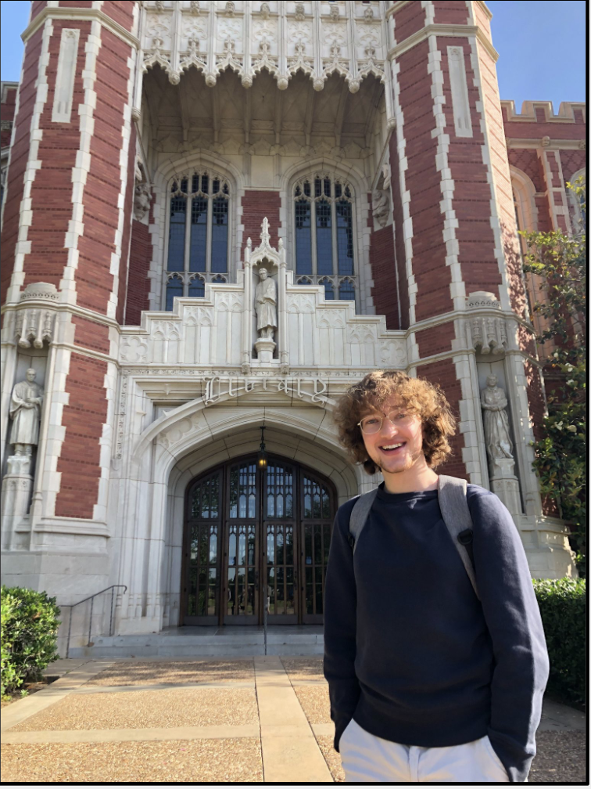
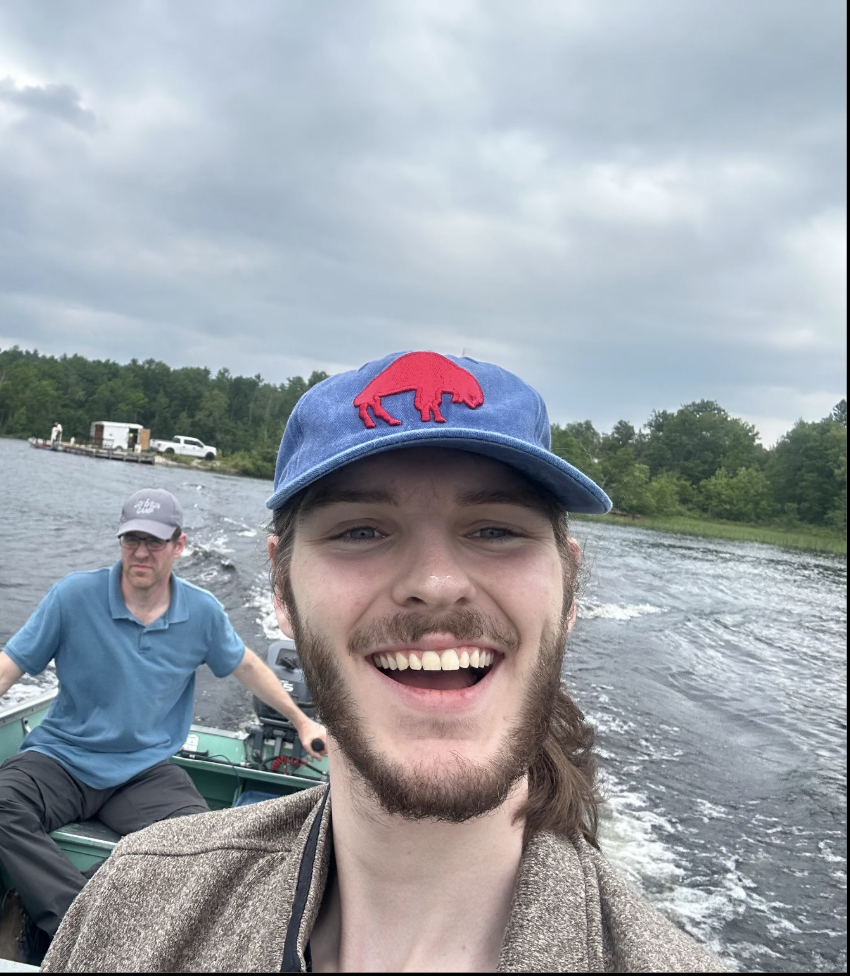
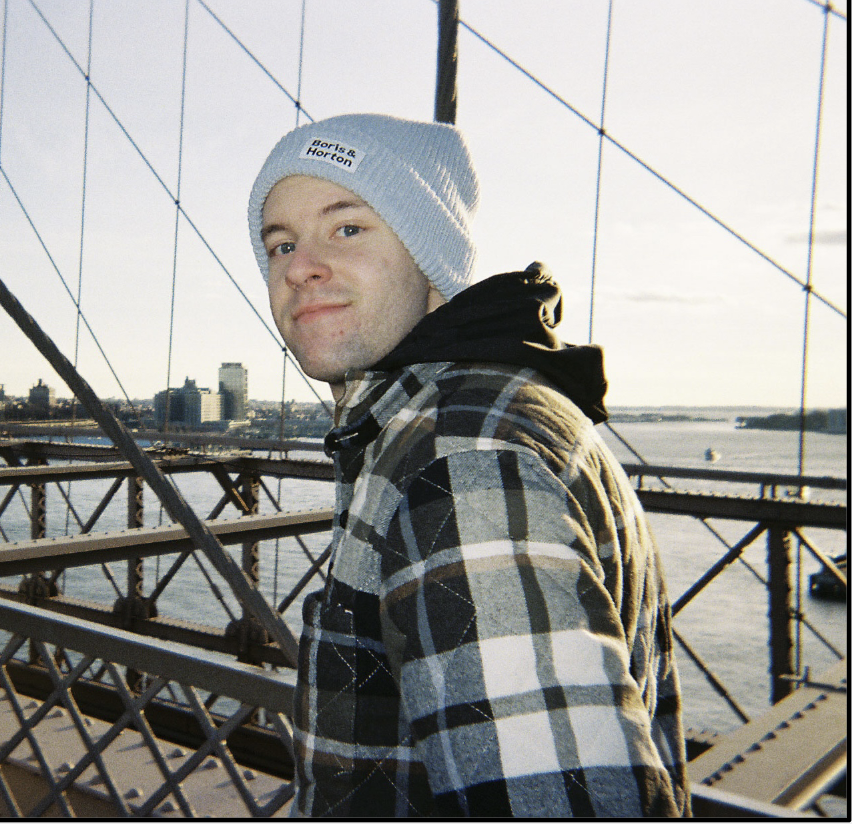
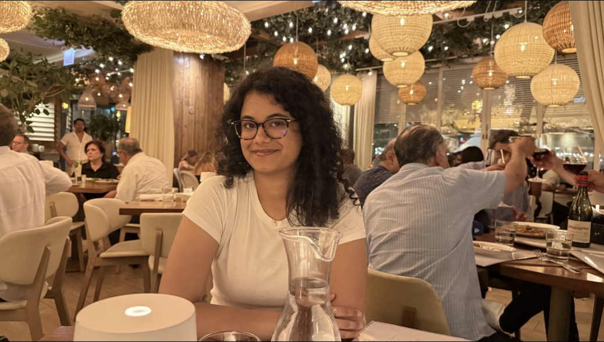
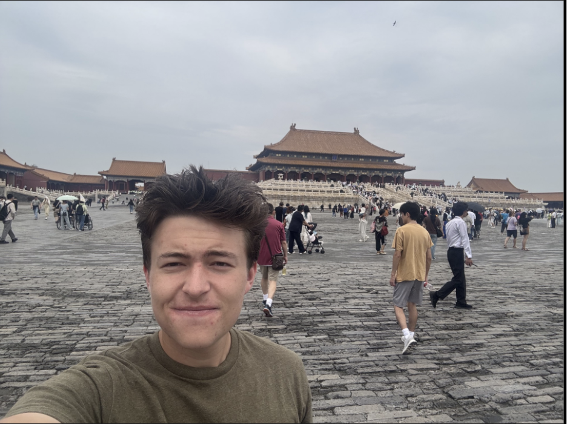
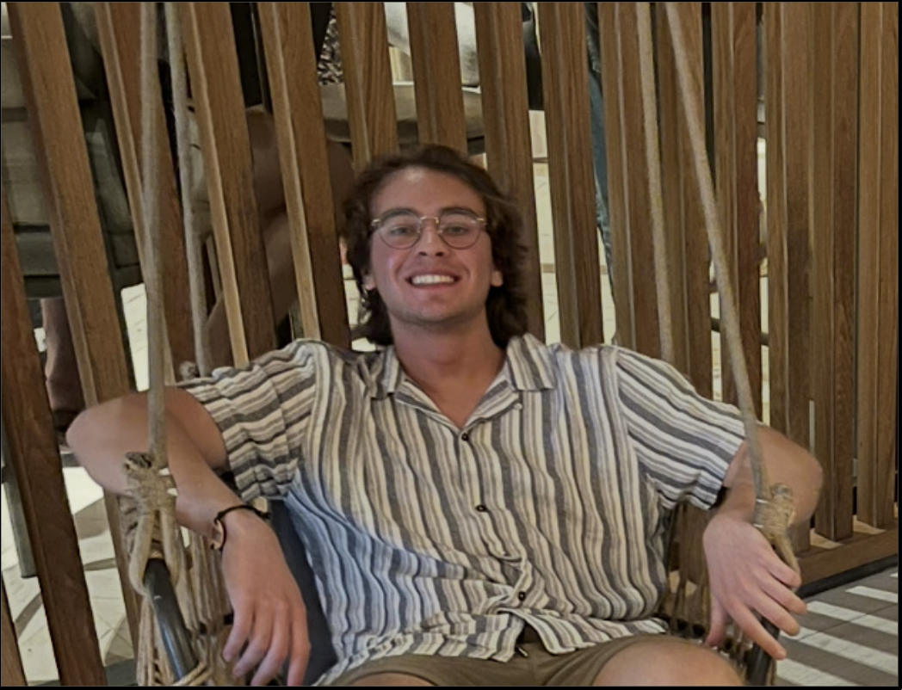
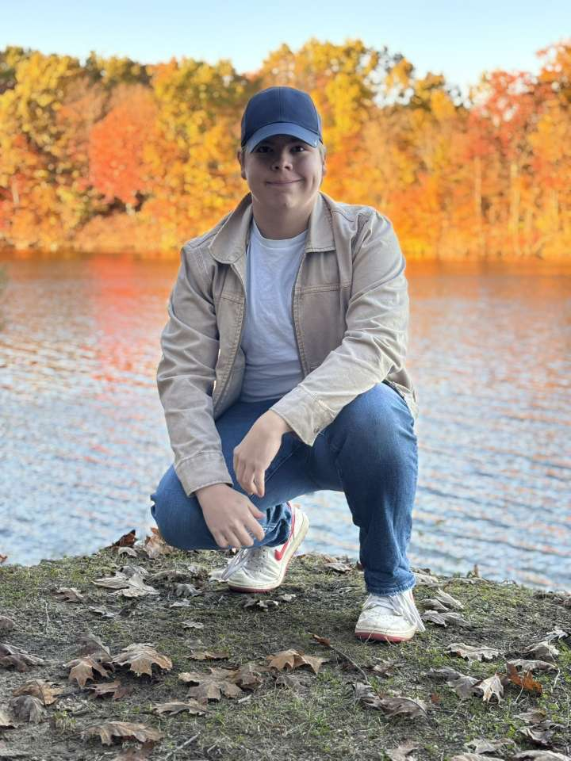

Meet the executive team!
Get to know the dedicated individuals leading our organization! Hover over or tap a card to read a short bio.

"I am a Senior at the University of Oklahoma, and am double majoring in International Studies and Political Science. I got involved in Model UN because of my passion for foreign affairs and educating people about the importance of the UN."
Jordan Kennedy
President

"I am a Junior at the University of Oklahoma. I'm pursing a B.S. in Psychology, and a minor degree in Latin along with a minor in film and media studies. I got involved with Model United Nations as an executive because I believe that it promotes research literacy as well as interpersonal skills in its members."
Sam Pritchard
Secretary General

Short Biography
Ren Giusti
Treasurer

Short Biography
Aziza Chugh
Secretary

"I am a sophomore at the University of Oklahoma majoring in Economics-Pre Law with a minor in history! I got involved in Model United Nations due to my interest in geopolitics, in which this club allows you to truly experience working within a international diplomatic framework."
Graham Harris
Co-Ambassador

Short Biography
Nishant Shrivastava
Co-Ambassador
Meet the Board of Trustees!
Get to know the individuals assisting in the leadership of our organization! Hover over or tap a card to read a short bio.
![Photo of [Name]](../images/officer-placeholder.JPG)
Short Biography
Aedan Gibbons
Board of Trustees Member 1
Short Biography
Arian Bordbar
Board of Trustees Member 2
Short Biography
Jordan A. Tayar
Board of Trustees Member 3
Short Biography
Grayson Day
Board of Trustees Member 4

I am a freshman here at the University of Oklahoma majoring in meteorology and mathematics! I am involved in Model United Nations as I believe in the importance of multidisciplinary study, as well as being an informed global citizen.
Joe Pittenger
Board of Trustees Member 5
Short Biography
Vacant
Board of Trustees Member 6